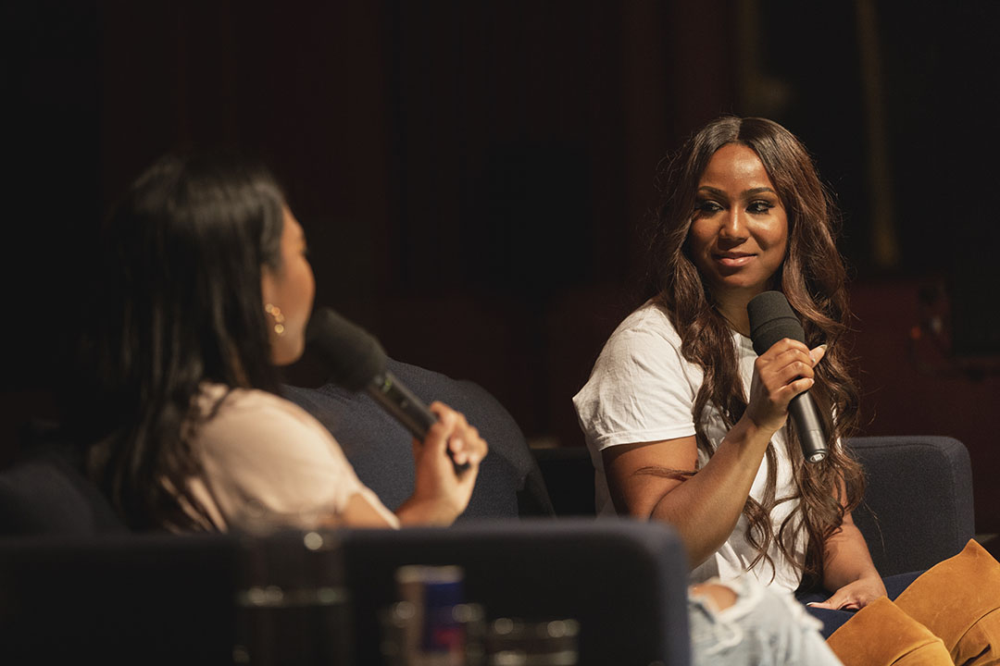

Red Bull Music Academy Lectures: Text Analysis and Topic Modeling
2021-09-16
Part 1 Introduction
 Photo by Fabian Brennecke
This project uses tools and techniques introduced in the Digital Text in the Humanities course1 to undertake basic text analysis and text mining, in the form of topic modeling, on a corpus made up of lectures by modern musicians and music industry professionals.
In essence the project seeks to ensure a simple question: what can be learnt from a corpus of interviews about modern music history using text analysis and mining?
The reasons for choosing this particular focus are simple: I’ve worked as a music journalist for the past 20 years, with a focus on modern music and in particular hip-hop and electronic music; and between 2016 and 2019 I worked as a project manager (and then moving images manager) on creating a complete text and video archive of all publicly available lectures presented as part of the Academy, an itinerant educational and promotional project funded by the drinks company which was active from 1998 to 2019. Since the closure of the Academy in 2019, I’ve become particularly interested in archiving and how new and existing theories and practices might intersect with my own interests in modern music history, which ultimately led me to the Digital Humanities and Digital Knowledge masters degree at the University of Bologna.
As such I wanted to choose a data set for this project which I was already familiar with so that I could use my domain expertise to better evaluate the analysis and mining. As part of my work on the RBMA archive I’ve read and watched pretty much every lecture, and I’ve also worked extensively with some of my colleagues on various ways to integrate the knowledge within the lectures into other content we were creating. Throughout all this we also did a lot of thinking about different ways in which this knowledge could be viewed and used. Thanks to my studies I now have a better understanding of how, in the particular case of this project, techniques such as text analysis and mining can be used to achieve just that.
I’d like to make one last note on the data, as it relates to its sourcing and origins and in the spirit of the “show your work” principle as detailed by Catherine D’Ignazio and Lauren Klein in Data Feminism (“7. Show Your Work” 2020). As D’Ignazio and Klein explain:
“Data work is part of a larger ecology of knowledge, one that must be both sustainable and socially just. […] the network of people who contribute to data projects is vast and complex. Showing this work is an essential component of data feminism […]. An emphasis on labor opens the door to the interdisciplinary area of data production studies: taking a data visualization, model, or product and tracing it back to its material conditions and contexts, as well as to the quality and character of the work and the people required to make it. This kind of careful excavation can be undertaken in academic, journalistic, or general contexts, in all cases helping to make more clearly visible—and therefore to value—the work that data science rests upon.”
Firstly the source files for this project are taken from GitHub user ewenme2 who in 2019, the month after the Academy was closed, created a project that used the lecture transcripts to generate new lectures. That project is sadly no longer online but his repository with the raw data is3 and that is what I used as the source for my project as it was easier than going through my own archive and reformatting my versions. I had helped create the data ewenme used, and in turn used his processing of this data.
Secondly, the full archive of lectures which is at the heart of this project would not have been possible without the work of many other people: the staff, artists, and hosts who spent time on the couch, and away from it, preparing informative conversations; various staff and freelance journalists who edited the transcripts; anonymous transcribers contracted via services such as Rev; various event and video teams who organized and produced the lectures, most of whom either worked for Yadastar*, Red Bull, or other local contractors.
This isn’t by any means a large data project but it remains nonetheless possible only because of all the work that came before it in creating one of the most unique music history archives currently in circulation.
1.1 Pre-Processing Steps
As part of the Digital Text in the Humanities course we were introduced to various text analysis tools. This project focuses on the parallel use of two main software packages to do the analysis and mining, R and Python, largely because both have been introduced across various courses in the first year of the Digital Humanities and Digital Knowledge degree and because they are among the better known, and most common, for such uses.
However I also did some preliminary, let’s call it pre-processing, work using other tools such as Voyant4 and Distant Reader5.
Voyant is a great and easy to use tool, and many of what I’ve done in this project can be done much more easily with it, however it is more limited in how you can control the various processing functions and their outputs. I ultimately felt that I stood to learn more in the long run by doing a lot of this myself, though I did go back to Voyant a few times throughout to check I was obtaining similar results.
Distant Reader is an open source software tool developed by Eric Lease Morgan at the University of Notre Dame. I was introduced to it around the same time I began this project and was curious about how it might combine with what we had learnt about both text analysis and distant reading in our course. Much like Voyant, Distant Reader combines many of the best known and most used text analysis techniques and tools into one easy to use package. As with Voyant, you simply feed it data and it then allows you to browse the results in a variety of formats, as well as export them. I used some of these exports as preliminary analysis of the corpus and used some of the insights gleaned from it to inform the cleaning processes described in the following chapters.
As a last note, most of the raw data files referenced in the following notebooks are available in the project’s GitHub repo6.